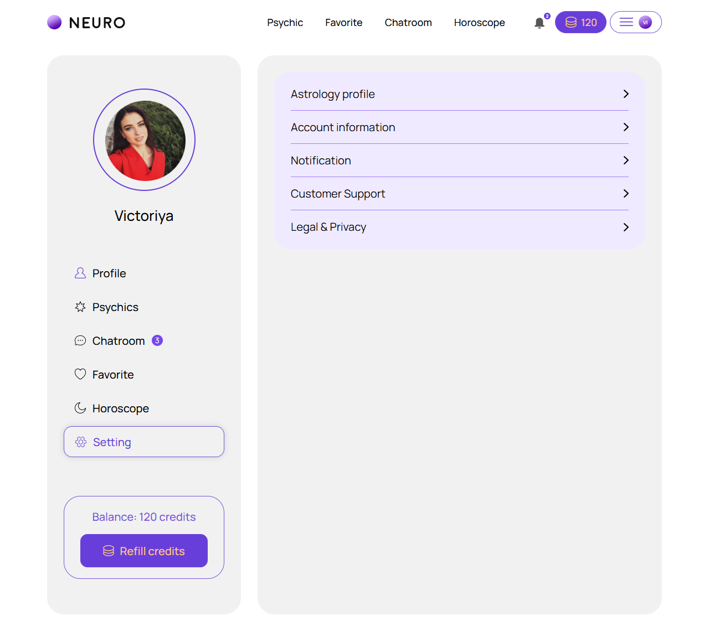
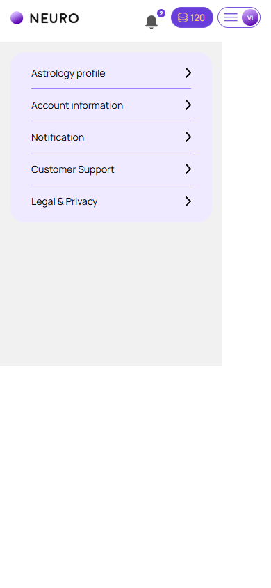

Настройки
account/settings.html
Разделить личные данные, уведомления, оплату и правовые настройки.
| Когда открывается | Меню аккаунта |
|---|---|
| Данные | Список доступных разделов и права. |
| Сценарий | Выбор строки открывает нужный раздел без побочного сохранения. |
| Переходы | Данные аккаунта · Настройки уведомлений · Автопополнение · Подписки · Управление персональными данными · Право и конфиденциальность |
Общая и предметная логика. Снимки и подписи элементов — исходная редакция макета; поздние уточнения ТЗ имеют приоритет в своей области. Это не проверка текущего сайта.
Состояние 1280 · 1280 × 1160


Элементы и ожидаемые действия
| Элемент | Название в макете | Действие | Ожидаемый результат |
|---|---|---|---|
| E001 Виден | Neuro profile | Открыть адрес из исходника: profile.html. | Сохранить авторизацию и переданный контекст. Backend-only маршрут связывает Игорь; открытие не выполняет денежное действие. |
| E002 Виден | Psychic | Открыть адрес из исходника: psychics.html. | Сохранить авторизацию и переданный контекст. Backend-only маршрут связывает Игорь; открытие не выполняет денежное действие. |
| E003 Виден | Favorite | Открыть адрес из исходника: favorites.html. | Сохранить авторизацию и переданный контекст. Backend-only маршрут связывает Игорь; открытие не выполняет денежное действие. |
| E004 Виден | Chatroom | Открыть адрес из исходника: chatroom.html. | Сохранить авторизацию и переданный контекст. Backend-only маршрут связывает Игорь; открытие не выполняет денежное действие. |
| E005 Виден | Horoscope | Открыть адрес из исходника: horoscope.html. | Сохранить авторизацию и переданный контекст. Backend-only маршрут связывает Игорь; открытие не выполняет денежное действие. |
| E006 Виден | Notifications, 2 unread notifications | Открыть адрес из исходника: notifications.html. | Сохранить авторизацию и переданный контекст. Backend-only маршрут связывает Игорь; открытие не выполняет денежное действие. |
| E007 Виден | Profile | Открыть адрес из исходника: profile.html. | Сохранить авторизацию и переданный контекст. Backend-only маршрут связывает Игорь; открытие не выполняет денежное действие. |
| E008 Виден | Psychics | Открыть адрес из исходника: psychics.html. | Сохранить авторизацию и переданный контекст. Backend-only маршрут связывает Игорь; открытие не выполняет денежное действие. |
| E009 Виден | Chatroom 3 | Открыть адрес из исходника: chatroom.html. | Сохранить авторизацию и переданный контекст. Backend-only маршрут связывает Игорь; открытие не выполняет денежное действие. |
| E010 Виден | Favorite | Открыть адрес из исходника: favorites.html. | Сохранить авторизацию и переданный контекст. Backend-only маршрут связывает Игорь; открытие не выполняет денежное действие. |
| E011 Виден | Horoscope | Открыть адрес из исходника: horoscope.html. | Сохранить авторизацию и переданный контекст. Backend-only маршрут связывает Игорь; открытие не выполняет денежное действие. |
| E012 Виден | Setting | Открыть адрес из исходника: settings.html. | Сохранить авторизацию и переданный контекст. Backend-only маршрут связывает Игорь; открытие не выполняет денежное действие. |
| E013 Виден | Astrology profile | Открыть адрес из исходника: astrology.html. | Сохранить авторизацию и переданный контекст. Backend-only маршрут связывает Игорь; открытие не выполняет денежное действие. |
| E014 Виден | Account information | Открыть адрес из исходника: account-information.html. | Сохранить авторизацию и переданный контекст. Backend-only маршрут связывает Игорь; открытие не выполняет денежное действие. |
| E015 Виден | Notification | Открыть адрес из исходника: notifications.html. | Сохранить авторизацию и переданный контекст. Backend-only маршрут связывает Игорь; открытие не выполняет денежное действие. |
| E016 Виден | Customer Support | Открыть адрес из исходника: support.html. | Сохранить авторизацию и переданный контекст. Backend-only маршрут связывает Игорь; открытие не выполняет денежное действие. |
| E017 Виден | Legal & Privacy | Открыть адрес из исходника: legal.html. | Сохранить авторизацию и переданный контекст. Backend-only маршрут связывает Игорь; открытие не выполняет денежное действие. |
Состояние 390 · 390 × 844


Элементы и ожидаемые действия
| Элемент | Название в макете | Действие | Ожидаемый результат |
|---|---|---|---|
| E001 Виден | Neuro profile | Открыть адрес из исходника: profile.html. | Сохранить авторизацию и переданный контекст. Backend-only маршрут связывает Игорь; открытие не выполняет денежное действие. |
| E002 Скрыт в этом состоянии | Psychic | Открыть адрес из исходника: psychics.html. | Сохранить авторизацию и переданный контекст. Backend-only маршрут связывает Игорь; открытие не выполняет денежное действие. |
| E003 Скрыт в этом состоянии | Favorite | Открыть адрес из исходника: favorites.html. | Сохранить авторизацию и переданный контекст. Backend-only маршрут связывает Игорь; открытие не выполняет денежное действие. |
| E004 Скрыт в этом состоянии | Chatroom | Открыть адрес из исходника: chatroom.html. | Сохранить авторизацию и переданный контекст. Backend-only маршрут связывает Игорь; открытие не выполняет денежное действие. |
| E005 Скрыт в этом состоянии | Horoscope | Открыть адрес из исходника: horoscope.html. | Сохранить авторизацию и переданный контекст. Backend-only маршрут связывает Игорь; открытие не выполняет денежное действие. |
| E006 Виден | Notifications, 2 unread notifications | Открыть адрес из исходника: notifications.html. | Сохранить авторизацию и переданный контекст. Backend-only маршрут связывает Игорь; открытие не выполняет денежное действие. |
| E007 Скрыт в этом состоянии | Profile | Открыть адрес из исходника: profile.html. | Сохранить авторизацию и переданный контекст. Backend-only маршрут связывает Игорь; открытие не выполняет денежное действие. |
| E008 Скрыт в этом состоянии | Psychics | Открыть адрес из исходника: psychics.html. | Сохранить авторизацию и переданный контекст. Backend-only маршрут связывает Игорь; открытие не выполняет денежное действие. |
| E009 Скрыт в этом состоянии | Chatroom 3 | Открыть адрес из исходника: chatroom.html. | Сохранить авторизацию и переданный контекст. Backend-only маршрут связывает Игорь; открытие не выполняет денежное действие. |
| E010 Скрыт в этом состоянии | Favorite | Открыть адрес из исходника: favorites.html. | Сохранить авторизацию и переданный контекст. Backend-only маршрут связывает Игорь; открытие не выполняет денежное действие. |
| E011 Скрыт в этом состоянии | Horoscope | Открыть адрес из исходника: horoscope.html. | Сохранить авторизацию и переданный контекст. Backend-only маршрут связывает Игорь; открытие не выполняет денежное действие. |
| E012 Скрыт в этом состоянии | Setting | Открыть адрес из исходника: settings.html. | Сохранить авторизацию и переданный контекст. Backend-only маршрут связывает Игорь; открытие не выполняет денежное действие. |
| E013 Виден | Astrology profile | Открыть адрес из исходника: astrology.html. | Сохранить авторизацию и переданный контекст. Backend-only маршрут связывает Игорь; открытие не выполняет денежное действие. |
| E014 Виден | Account information | Открыть адрес из исходника: account-information.html. | Сохранить авторизацию и переданный контекст. Backend-only маршрут связывает Игорь; открытие не выполняет денежное действие. |
| E015 Виден | Notification | Открыть адрес из исходника: notifications.html. | Сохранить авторизацию и переданный контекст. Backend-only маршрут связывает Игорь; открытие не выполняет денежное действие. |
| E016 Виден | Customer Support | Открыть адрес из исходника: support.html. | Сохранить авторизацию и переданный контекст. Backend-only маршрут связывает Игорь; открытие не выполняет денежное действие. |
| E017 Виден | Legal & Privacy | Открыть адрес из исходника: legal.html. | Сохранить авторизацию и переданный контекст. Backend-only маршрут связывает Игорь; открытие не выполняет денежное действие. |